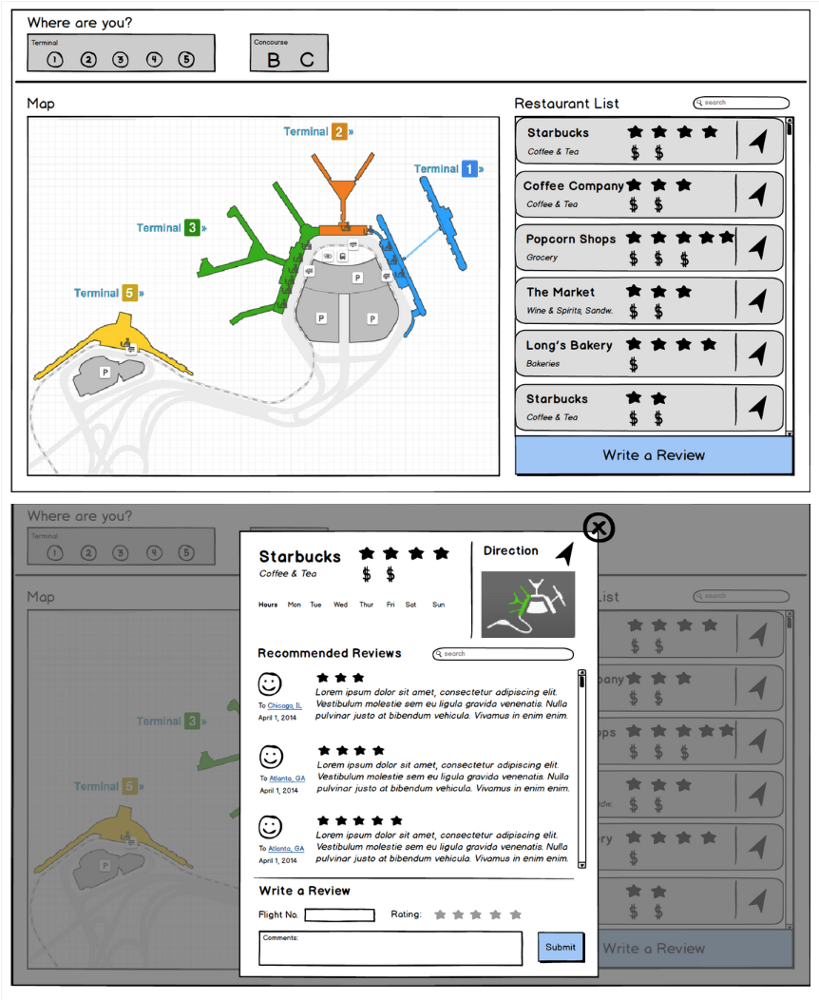
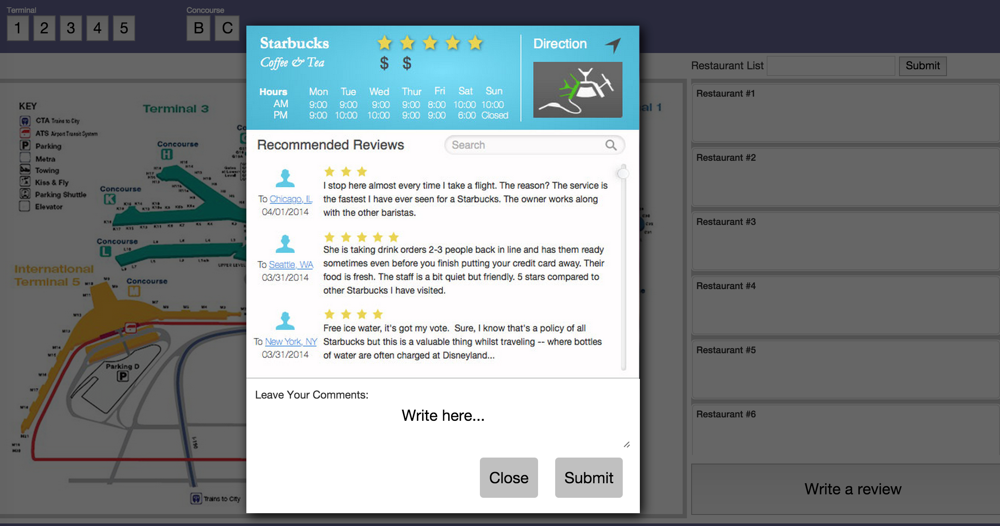
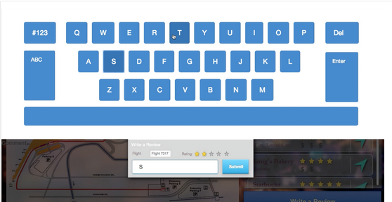
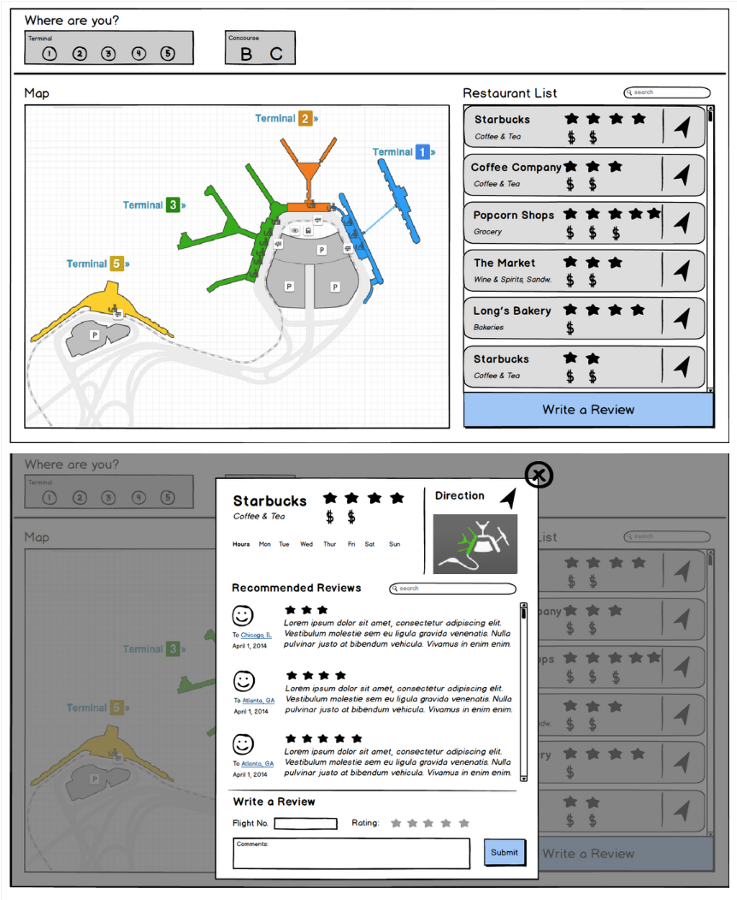
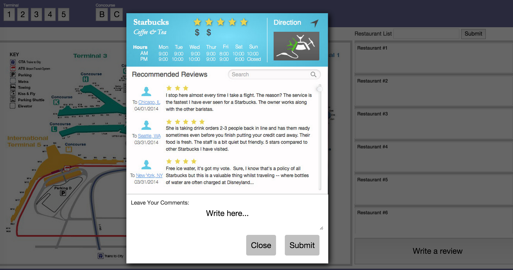
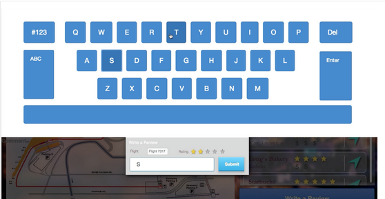

TypeNinjia - A mid-air typing method with Leap Motion for large displays.
DemoIn Uniquitous Computing class, our professor asked us to pick up a new ubiquitous technology to do an exciting project. We chose Leap Motion and we did do an exciting project.
 





Problem Space
Traditional text input modality is not suitable to use when standing in front of very large wall displays. Point-and-select input method suffers from distance-dependent and visibility-dependent problem. Since Leap Motion is distance-independent, we think it has the potential to be used for large displays. To validate our thought, we did a literature review surveying all the possible input modalities for wall-sized displays and concluded that distance-independent techniques are possibly the best for very large wall displays. Since most of the materials we collected were related to keyboard layouts, we focused our project on designing a validated keyboard used on big displays with Leap Motion.
Design
We finally chose QWERTY: it involves a very low learning curve; it can maintain an optimal interactive distance and visibility of the actions (satisfy Fitt's Law). We made certain subtle changes and created a scenario of an Airport wherein people have difficulty finding a good restaurant within the limited time they have. In order to utilize the power of Leap Motio controller we have formed two tasks that people would perform at the Airport: finding a restaurant and leaving comments on the restaurant. Both of these tasks are to be done on a large display presenting various locations throughout the airport. We selected this scenario because of the following reasons: I. A lot of people would come interact with the proposed interface on a large display; II. People have comparatively very less amount of spare time at the airport to gather information and act on it; III. They usually carry luggage with them which restrict their hand movement to locate information on any kiosk; IV. There are people from all walks of life providing a wider audience for our interface design.
Scenario
Elsa will take a plane from Indy to New York at 10:00 pm. At 6:00 pm, she arrives at the Indianapolis airport. Since there are still 4 hours left, she decides to find a restaurant and have dinner firstly in the airport. When entering the hall, she sees a large display showing an airport map and a list of restaurants with rating stars. Elsa goes close to the display and figures out that she can search for restaurants with gestures. Following the instructions, she chooses the terminal where she is firstly. Then she randomly clicks a restaurant on the right list and a window showing detailed information and comments about this restaurant pops up. Elsa glances at the price, location and comments a little while, and then she switches to another restaurant. After browsing several restaurants, she decides to go to a Starbucks with four stars for a cup of coffee and some snacks. She clicks the map on the top right corner for direction, gets to know the direction from her place to the Starbucks, and then heads for it. It turns out that this Starbucks is really a nice place with good coffee and delicious sandwiches, so Elsa decides to leave some positive feedback for it. When she returns to the hall, she goes to the large display, finds the Starbucks she was just at, and clicks “leave a comment” button. A simple keyboard soon pops up below the comments box, Elsa uses her right finger typing a short comment, slides five stars, clicks the submit button and leaves the comments successfully.
Prototype
The prototype includes an interactive map, restaurant search and result list, restaurant page for detailed information and reviews, virtual keyboard for typing. All the manipulations are done through various mid- air gestures using a leap motion. We developed the system using LeapStrap - a HTML5 based front-end framework. Leapstrap is a complete toolkit for building a Leap web site or web application. It requires 1 CSS file, 2 plugin files (jQuery and LeapJS) and the Leapstrap JS file, Leapstrap detects all anchor (e.g. hyperlinks) and makes them leap-interactive.
Conclusion
We designed a novel way to use mid-air gestures for typing on large-screen displays. The project explores accurate tracking functionalities of the Leap Motion Controller. We started with in-depth literature review studying previous work done in the large-displays and on screen keyboard. Next, we formulized the user requirements for our prototypes and built several iterations using LeapStrap framework. The current prototype uses hover gesture to type-in the words. In the future work, we would like to include a swipe gesture in the keyboard and a more robust prototype for large screen displays.